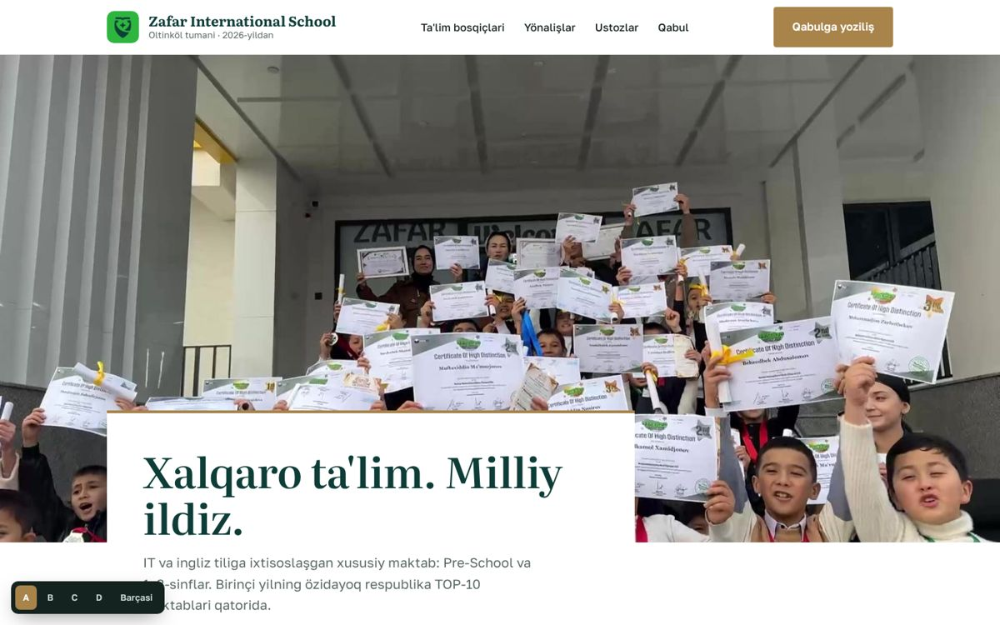
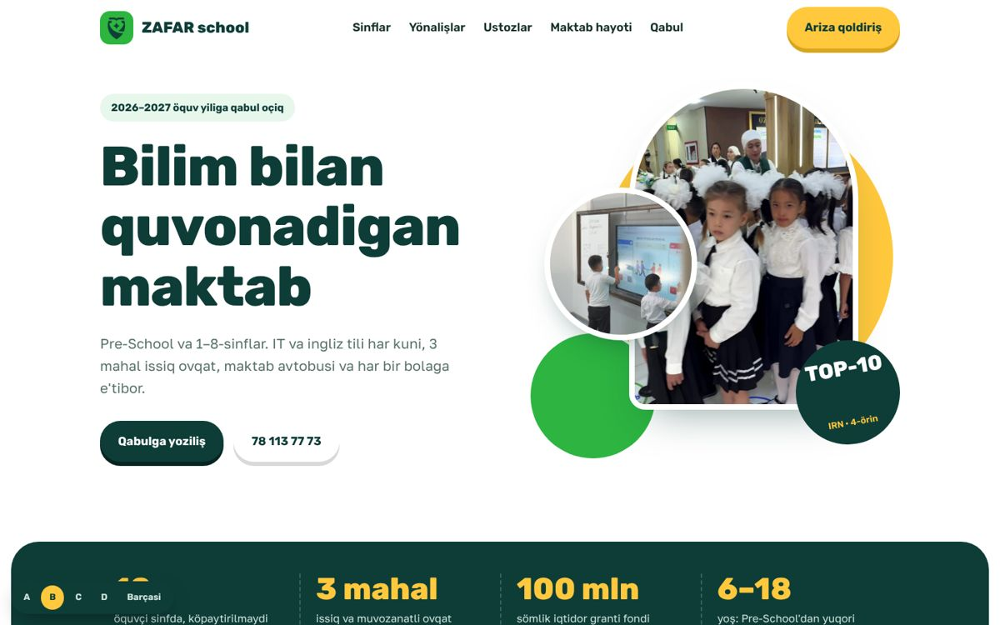
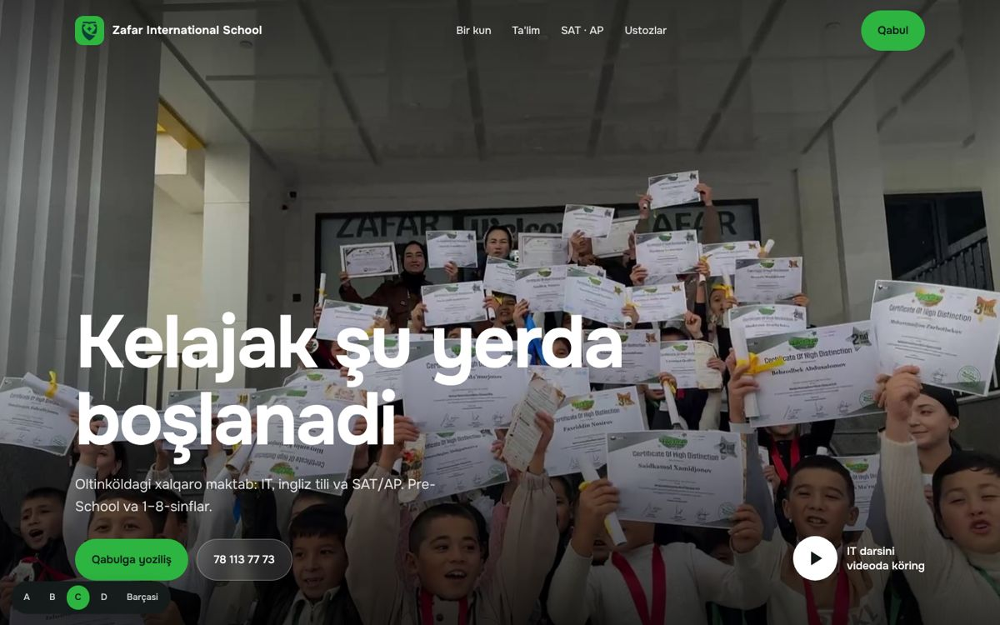

Sayt dizayni: variantni tanlang
Tanlangan: C · Kampus — asosiy sayt endi şu dizaynda: saytni oçiş.
Uçta yönaliş, bir xil mazmun. Har birini oçing, telefonda ham köring. Yoqqanini tanlasangiz, butun saytni şu uslubda davom ettiramiz.

A · Akademiya
Klassik va nufuzli. Serif sarlavhalar, oq fon, töq yaşil va bronza. Işonç va an'ana hissi.

B · Quvonç
Yorqin va bolalarga yaqin. Maktab binosi va avtobusining yaşil-sariq ranglari, yumaloq şakllar.

C · Kampus
Zamonaviy xalqaro maktab uslubi. Katta rasmlar, "bir kun" lentasi, video va minimal matn.